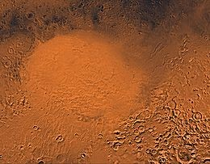
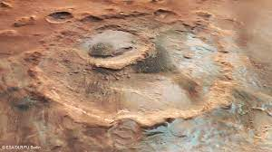

Olympus Mons is a dormant shield volcano on Mars, the largest volcano in the solar system. It is over 21 kilometers high and 624 kilometers wide, comparable to the size of the state of Arizona. It is a shield volcano, meaning that it was formed by the gradual accumulation of lava flows over millions of years. It stands about 1,200 km (750 mi) from the other three large Martian shield volcanoes, collectively called the Tharsis Montes (Arsia Mons, Pavonis Mons, and Ascraeus Mons). The volcano is located in the Tharsis region of Mars, and its peak is the highest point on the planet. Olympus Mons is a truly awe-inspiring sight, and it is one of the most iconic features on Mars. It is a reminder of the planet's ancient geological activity and its potential for future exploration.
Valles Marineris is a vast canyon system on Mars, stretching over 4,000 kilometers (2,500 miles) long and up to 200 kilometers (124 miles) wide. It is thought to have been formed by the collapse of a massive fault system, and it is one of the largest canyons in the solar system. Valles Marineris is located on the western side of Mars, and it runs parallel to the equator. The canyon system is divided into four main sections: Noctis Labyrinthus, Valles Marineris proper, chaotic terrain, and Coprates Chasma. The canyon walls are very steep, and some of them reach heights of over 7 kilometers (4.3 miles). The floors of the canyons are also very rugged, with a variety of features, including mesas, buttes, and craters. Valles Marineris is a fascinating place to study, and it is thought to have played an important role in the formation and evolution of Mars. The canyon system is also a potential destination for future human exploration.
Ares Vallis is a large outflow channel on Mars, over 1,750 kilometers (1,091 miles) long. It is thought to have been carved by massive floods of water, possibly billions of years ago. Ares Vallis begins in Iani Chaos, a depression in the Margaritifer Terra highlands. It then flows northwest through the ancient Xanthe Terra highlands, emptying into Chryse Planitia. The valley is flanked by steep walls that reach heights of up to 2,000 meters (6,562 feet). The floor of the valley is relatively flat, with some areas of raised terrain. Ares Vallis is a valuable site for studying the history of water on Mars. The valley walls show evidence of erosion by water, and the floor of the valley contains deposits of sediments that may have been transported by water.
Hellas Basin is the largest impact crater in the solar system, with a diameter of over 2,300 kilometers (1,400 miles). It is located in the southern hemisphere of Mars, and its floor is 7,152 meters (23,465 feet) below the Martian datum, making it the lowest point on the planet. Hellas Basin is thought to have been formed by the impact of a massive asteroid or comet billions of years ago. The impact caused a huge crater that was then filled with lava and sediments. The basin is surrounded by a ring of mountains, and its floor is covered with a variety of geological features, including craters, ridges, and valleys. Hellas Basin is an important site for studying the history of Mars. The basin's deep atmosphere and sheltered location may have preserved evidence of ancient life.
Utopia Planitiais a large plain on Mars, located in the northern hemisphere. It is the largest recognized impact basin on Mars, with an estimated diameter of 3,300 kilometers (2,100 miles). The plain is covered with a smooth layer of basaltic lava, which suggests that it was formed by a massive volcanic eruption billions of years ago. Utopia Planitia is also thought to be rich in water ice, which could make it a potential site for future human exploration. The plain is home to a variety of geological features, including craters, ridges, and valleys. It is also the landing site of the Viking 2 lander and the Zhurong rover. Utopia Planitia is a fascinating place to study, and it has the potential to provide important insights into the history and potential habitability of Mars.
Argyre Planitia is a large basin on Mars, located in the southern hemisphere. It is the second largest impact basin on Mars, with a diameter of over 1,800 kilometers (1,100 miles). The basin is also the second deepest impact basin on Mars, with a floor that is 5.2 kilometers (17,000 feet) below the Martian datum. Argyre Planitia is thought to have been formed by the impact of a massive asteroid or comet billions of years ago. The impact caused a huge crater that was then filled with lava and sediments. The basin is surrounded by a ring of mountains, and its floor is covered with a variety of geological features, including craters, ridges, and valleys. Argyre Planitia is an important site for studying the history of Mars. The basin's deep atmosphere and sheltered location may have preserved evidence of ancient life.
Jezero Crater is a 45-kilometer-wide crater in the Isidis Planitia region of Mars. It is thought to have once held a lake, and it contains a fan-delta deposit rich in clays. The lake in the crater was present when valley networks were forming on Mars. Jezero Crater is a fascinating place to study because it provides clues about the history of water on Mars. The presence of a lake and a fan-delta suggests that Jezero Crater was once a habitable environment. Scientists are now searching for evidence of ancient life in the crater. Jezero Crater is also a potential landing site for future human missions to Mars. The crater's location near the equator and its abundance of water resources make it an ideal place for a base camp.
Gale Crater is a 154-kilometer-wide crater in the Aeolis quadrangle of Mars. It is home to Mount Sharp, a layered mountain that rises about 5.5 kilometers (18,000 feet) above the crater floor. Gale Crater on Mars, from NASAOpens in a new window mars.nasa.gov Gale Crater on Mars, from NASA Gale Crater is thought to have been formed by the impact of a large asteroid or comet billions of years ago. The impact caused a huge crater that was then filled with lava and sediments. Mount Sharp is made up of sedimentary rocks that have been deposited over millions of years. The rocks contain evidence of ancient lakes and rivers, as well as ancient environments that may have been habitable. Gale Crater is a fascinating place to study because it provides clues about the history of water and life on Mars. Scientists are using the Curiosity rover to explore the crater and learn more about its past. Gale Crater is also a potential landing site for future human missions to Mars. The crater's location near the equator and its abundance of water resources make it an ideal place for a base camp.